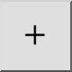

Απενεργοποίηση περιορισμών
Γραμμή εργαλείων / Εικονίδιο:


Μενού: Πιάσιμο > Απενεργοποίηση περιορισμών
Συντόμευση: E, N
Εντολές: restrictoff | en
Γραμμή εργαλείων / Εικονίδιο:


Απενεργοποιεί όλους τους περιορισμούς πιασίματος.